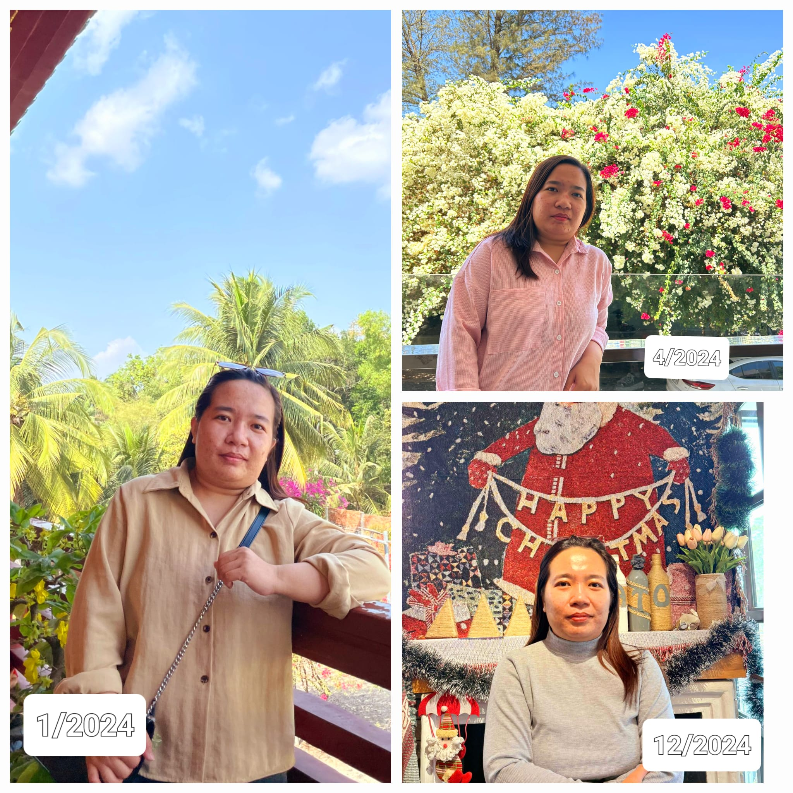

Vậy là một năm nữa lại sắp khép lại. Đây là lúc mình ngồi xuống, nhìn lại những gì đã qua, những gì đã đạt được và cả những điều vẫn còn đang dang dở. Một năm với nhiều cảm xúc, nhiều bài học và những dấu mốc khó quên.
------------------
🌟 1. Thành tựu năm cũ 🌟
💼 Công việc và phát triển bản thân:
- 🎓 Hốt được mấy tấm bằng về AI – điều mà bản thân từng nghĩ sẽ rất khó hoàn thành. Nhưng thú thật là vẫn chưa tận dụng được hết những gì mình học được. Dẫu vậy, đây là một khởi đầu đáng giá.
- 🏢 Tìm được một môi trường mà mình cảm nhận được sự gắn bó lâu dài hơn, nhờ không khí tích cực và sự đồng hành từ những người đáng trân trọng.
- 🙏 Đặc biệt, mình biết ơn những người đang dìu dắt và giúp mình phát triển từng ngày.
👨👩👧👦 Gia đình và bạn bè:
- 💔 Một điểm mình cần cải thiện là sự kết nối. Mình đã vô tình làm mất đi nhiều mối quan hệ quý giá chỉ vì bản tính ít chia sẻ và thụ động trong việc giữ liên lạc.
- 🤝 Dẫu sao, nhận ra vấn đề cũng là bước đầu để sửa đổi. Mong rằng năm tới sẽ làm tốt hơn trong việc gắn kết.
💪 Sức khỏe – nền tảng cho mọi thành công:
- 🩺 Năm nay, mình thực sự thấm thía Tầm Quan Trọng Của Sức Khoẻ. Sức khỏe là tài sản lớn nhất.
- Những con số đáng tự hào:
+⚖️ Trọng lượng cơ thể: 61.1kg giảm còn 51kg – mục tiêu mà mình tự hào nhất!
+ 📉 BMI: 28.7 xuống còn 23.9
+ 🔥 Mỡ cơ thể: 39.4% giảm còn 32.5%
- 🌿 Hành trình chăm sóc bản thân không chỉ giúp mình khỏe mạnh mà còn mang đến sự tự tin và năng lượng sống tích cực hơn.
---
✨ 2. Bài học lớn nhất – Thêm độc lập ✨
---> “Dựa núi, núi sẽ đổ. Dựa sông, sông sẽ mòn. Chỉ có dựa vào chính mình là bền vững nhất.”
- 🛤️ Năm qua, mình đã học được cách tự đứng vững hơn, tự giải quyết vấn đề và xây dựng sức mạnh từ bên trong. Dù đôi lúc khó khăn, nhưng chính những thử thách ấy đã giúp mình trưởng thành hơn rất nhiều.
-----------------
🎯 Kế hoạch cho năm 2025 🎯
- 🏃 Tiếp tục duy trì sức khỏe– vì một cơ thể khỏe mạnh là bước đệm cho mọi thành công.
- 🌈 Làm mới các kết nối – gắn kết nhiều hơn với gia đình, bạn bè và mở rộng các mối quan hệ.
- 📖 Học hỏi và phát triển hơn nữa – tận dụng tốt những kiến thức đã tích lũy, không để cơ hội vụt qua.
--------------------
**🙏 Cảm ơn năm 2024 vì tất cả.**
Cảm ơn những người đã đồng hành, dìu dắt và truyền cảm hứng cho mình. Cảm ơn bản thân vì đã kiên trì, đã dám thay đổi và không ngừng cố gắng.
💌 Chúc tất cả mọi người một năm mới tràn đầy sức khỏe, niềm vui và thành công!
✨ **2025, mình đã sẵn sàng để đón chờ những điều tuyệt vời mới.** ✨
🌟 Happy New Year! 🎉
